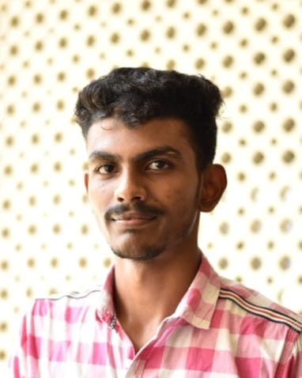

Vyshnav is a 21-year-old Electronics and Computer Engineering student currently in his second year of a Bachelor of Technology program in Thiruvananthapuram, Kerala. Highly driven and diligent, he considers himself a continuous learner who actively participates in technical workshops and seminars to stay ahead of emerging tech trends. He excels at balancing his rigorous academic schedule with his deep involvement in extracurricular activities, showcasing excellent time management and collaborative skills.
During his off time, Vyshnav is deeply committed to community upliftment as a proud member of the National Service Scheme (NSS). Whether he is debugging complex circuits, playing basketball in local tournaments, or unwinding by solving Rubik's cubes and editing videos, he brings an analytical and energetic mindset to everything he does. Equipped with strong communication abilities, he continually looks forward to presenting his ideas clearly and building intelligent digital solutions.